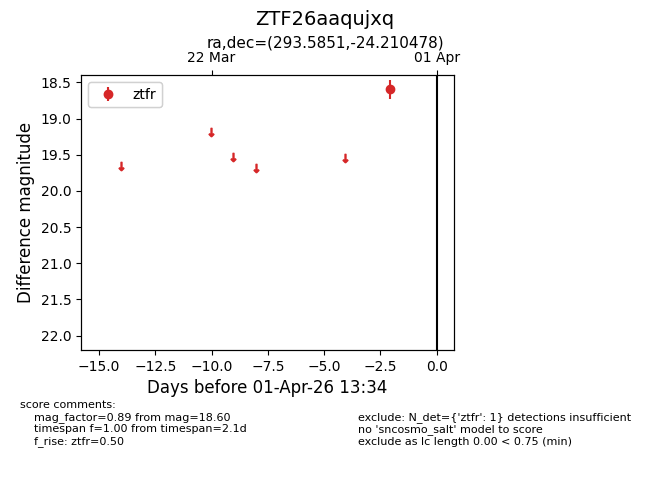
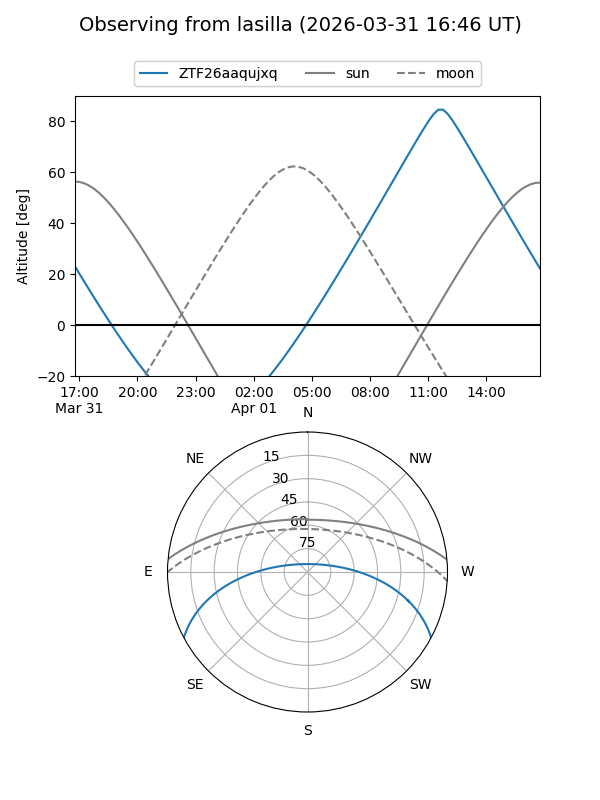
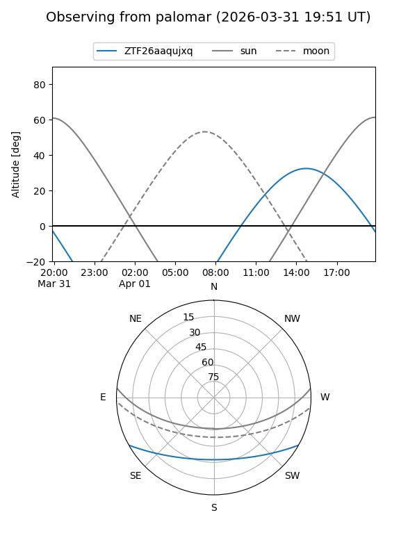

ZTF26aaqujxq
Target ZTF26aaqujxq at 2026-04-01 13:37
Aliases and brokers:
FINK: link
Lasair: link
ALeRCE: link
alt names
ZTF26aaqujxq (ztf,fink_ztf)
Coordinates:
equatorial (ra, dec) = 293.5851,-24.21048
equatorial (HMS+DMS) = 19:34:20.41,-24:12:37.72
galactic (l, b) = (15.1396,-19.75858)
Flags:
Photometry:
last ztfr=18.60
1 ztfr detections
Lightcurve

Visibility


Additional plots